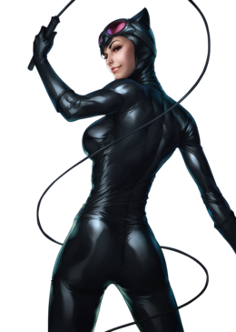

A superhero is a person who does heroic deeds and has the ability to do them in a way that a normal person couldn’t.
So in order to be a superhero, you need a power that is more exceptional than any power a normal human being could possess, and you need to use that power to accomplish good deeds.
Otherwise, a policeman or a fireman could be considered a superhero. For instance, a good guy fighting a bad guy could be just a regular police story or detective story or human-interest story.
But if it’s a good guy with a superpower who is fighting a bad guy, it becomes a superhero story.
If the good guy is doing something that a normal human being couldn’t do, couldn’t accomplish, then I assume he becomes a superhero.
Article on superheroes at
OUP blog

Catwoman
Selina Kyle, also known as Catwoman, is a jewel thief from Gotham City and one Batman's major girlfriends.
Currently portrayed as an orphan who learned to survive on Gotham's streets, Selina took to thievery to survive... but determined to do it in style, she learned martial arts and trained extensively to perfect her skills in cat burglary.
Her criminal activities are often tempered by a reluctant altruism, making her an inconstant villain and occasional ally to Batman.
Anchor to "What makes a superhero?"